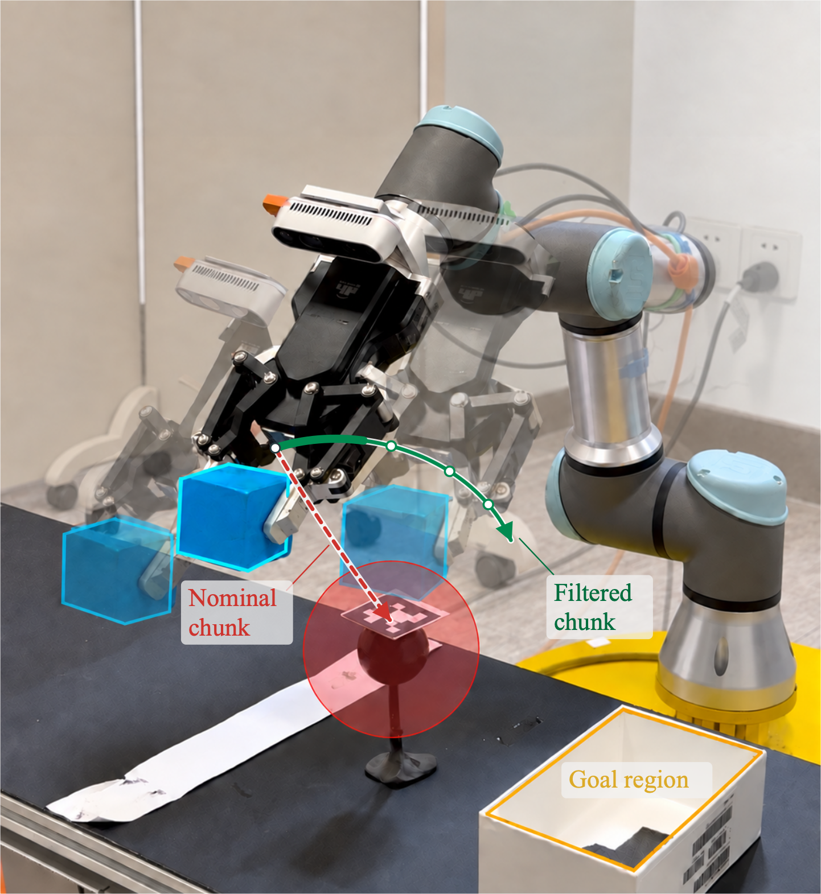
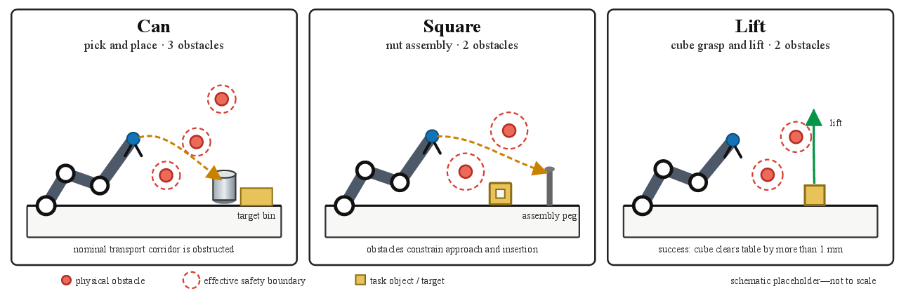
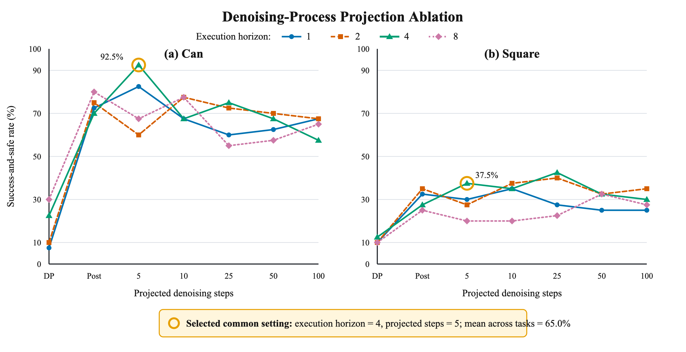
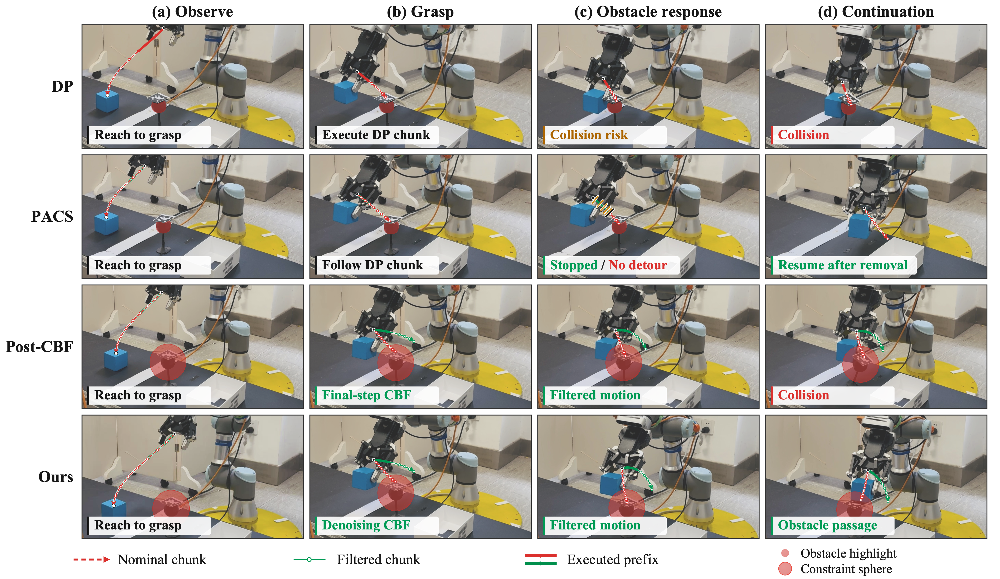

Observe
Acquire the current robot observation and obstacle geometry.
We integrate discrete-time control barrier function projections directly into diffusion-policy denoising, reshaping nominal action chunks into safe, task-directed robot motion without retraining the policy.

Filtered during denoisingDiffusion policies generate expressive action sequences, but their nominal trajectories need not satisfy collision-avoidance constraints. Execution-time filters can stop an unsafe command, yet path-preserving corrections may be unable to actively redirect a blocked trajectory. Constraining only a final state-space plan can also separate the safety correction from the policy's action-generation process.
DASF repeatedly projects intermediate action chunks onto trajectory-level discrete-time CBF constraints and feeds each correction back into subsequent denoising. The resulting chunk remains conditioned on the task observation while gaining room to bend around obstacles. A short prefix is executed before replanning from fresh measurements.
Every control update couples task-conditioned generation with sequential, trajectory-level safety correction.
Acquire the current robot observation and obstacle geometry.
Generate a task-conditioned nominal action chunk with the frozen diffusion policy.
Apply sequential discrete-time CBF constraints along the predicted EEF rollout.
Execute a short safe prefix, then repeat from the updated observation.

We compare the same frozen diffusion policy under alternative safety mechanisms across three manipulation tasks.

The frozen policy executes short action prefixes and replans from updated observations. Unlike path-preserving braking, denoising-time projection can redirect the nominal chunk while the obstacle remains in the workspace.

A lightweight inference-time interface between pretrained diffusion policies and discrete-time control barrier functions for safer robotic manipulation.